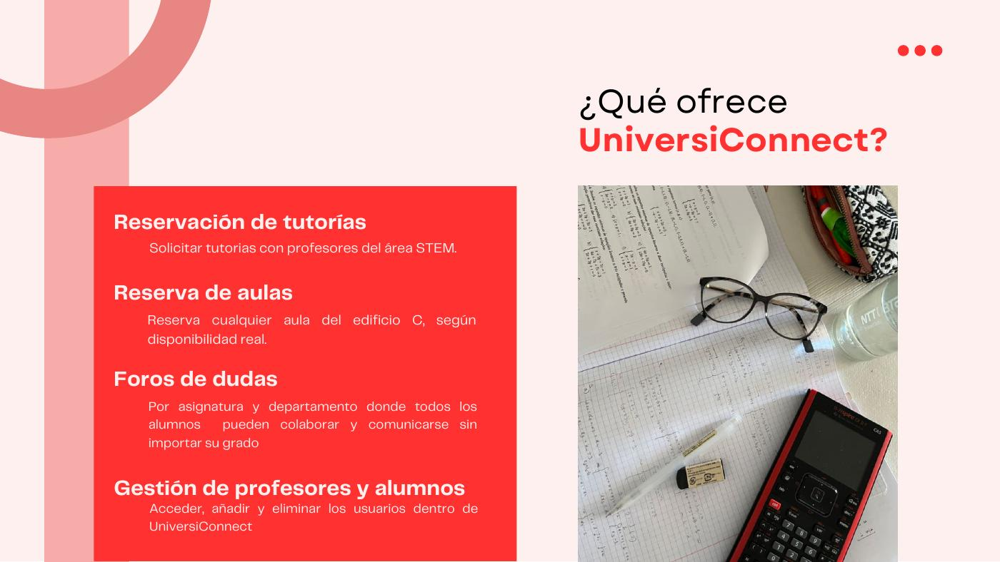
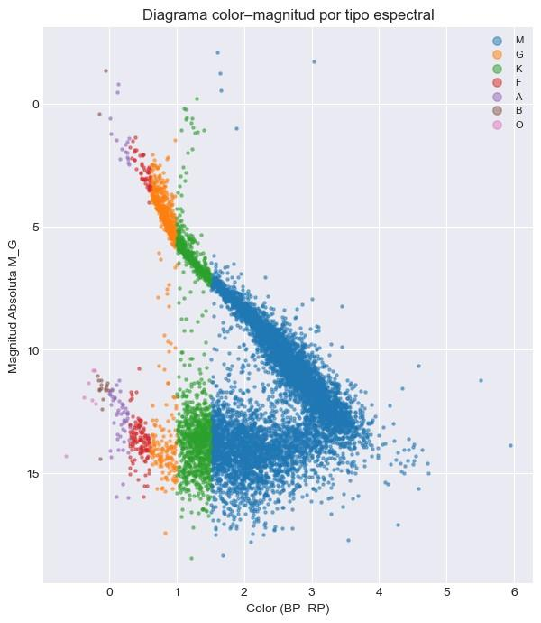
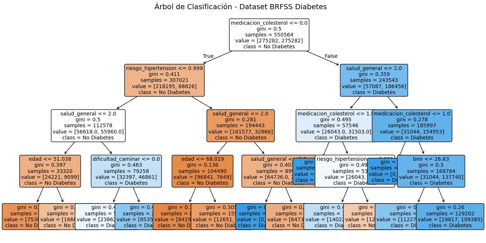

UniversiConnect

Hicimos en equipo un prototipo para pedir tutorías, reservar aulas y participar en foros de asignaturas. Tenía perfiles de alumnos, profesores y administradores, y funcionaba en nuestro ordenador.
- HTML
- Python
- Flask
- MySQL

Estudio Ingeniería Matemática en Ciencia de Datos e Ingeniería Informática.
Estudio Ingeniería Matemática en Ciencia de Datos e Ingeniería Informática en la Universidad Europea desde 2024. Me gusta programar y trabajar con datos para crear cosas útiles y fáciles de usar.
En la carrera he hecho proyectos de desarrollo web y análisis de datos. Uno de los que más me ha gustado es UniversiConnect, donde me encargué de la base de datos. Me gusta aprender haciendo proyectos y buscar soluciones cuando algo no funciona.
| Centro | Titulación | Años |
|---|---|---|
| Universidad Europea | Ingeniería Matemática en Ciencia de Datos e Ingeniería Informática | 2024 – actualidad |
| Estudios en curso. | ||

Hicimos en equipo un prototipo para pedir tutorías, reservar aulas y participar en foros de asignaturas. Tenía perfiles de alumnos, profesores y administradores, y funcionaba en nuestro ordenador.

En este trabajo individual descargué datos de estrellas del catálogo Gaia, los limpié y añadí información de otras fuentes mediante web scraping. Después los guardé en MySQL para hacer consultas y gráficos.

En este trabajo individual utilicé datos públicos de salud para probar modelos que predijeran la presencia de diabetes. Primero importé y limpié los datos, los exploré con gráficos y después comparé varios modelos.